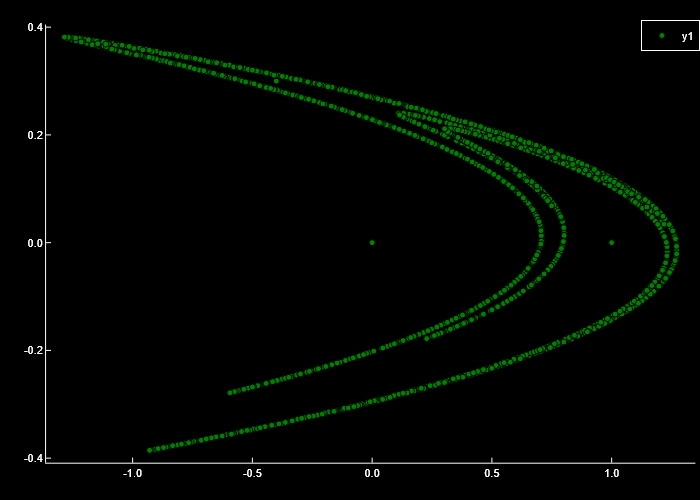
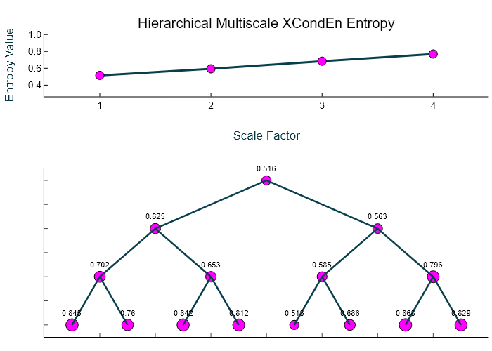

Example 9: Hierarchical Multiscale corrected Cross-Conditional Entropy
Import the x and y components of the Henon system of equations and create a multiscale entropy object with the following parameters: EnType = XCondEn(), embedding dimension = 2, time delay = 2, number of symbols = 12, logarithm base = 2, normalization = true
Data = ExampleData("henon");
Mobj = MSobject(XCondEn, m = 2, tau = 2, c = 12, Logx = 2, Norm = true)
using Plots
scatter(Data[:,1], Data[:,2], markercolor = "green", markerstrokecolor = "black",
markersize = 3, background_color = "black", grid = false)
Calculate the hierarchical multiscale corrected cross-conditional entropy over 4 temporal scales and return the average cross-entropy at each scale (Sn), the complexity index (Ci), and a plot of the multiscale entropy curve and the hierarchical tree with the cross-entropy value at each node.
MSx, Sn, Ci = hXMSEn(Data[:,1], Data[:,2], Mobj, Scales = 4, Plotx = true)([0.5159119469801318, 0.6245115584569841, 0.5634170000748405, 0.7022124034937283, 0.6532640538485219, 0.5852823820201765, 0.7956453173364485, 0.8446734972394015, 0.7604554984465494, 0.8415218012703684, 0.8115326608866869, 0.5128494134582905, 0.6861931413242152, 0.8678500562727558, 0.8287299287906533], [0.5159119469801318, 0.5939642792659123, 0.6841010391747188, 0.7692257497111151], 2.5632030151318776)